Live coding pies
TL;DR: I did some “live coding sessions” at FOSS4G 2021. The one about WebGL was fun but quite hectic, and deserves a proper technical explanation.
I’ve been mixing maps and javascript for a while now. That’s what led me to doing WebGL years ago, since performance of HTML5 <canvas> and SVG can suffer with a lot of entities on the screen.
However, WebGL is nothing but easy. It mimicks the OpenGL architecture, and any (or both) are very hard to understand. I’ve been making sense of the whole OpenGL data model bit by bit, ultimately giving birth to Glii, my very own WebGL abstraction framework.
One of my key realizations, my own “eureka moment” was noticing that, even though all 3D rendering stuff is based on triangles with three vertices each… vertices don’t exist. Pretty much like when Neo gets told that there is no spoon, I can confidently say that there is no vertex.
A big part of this realization comes from one of my biases: I’m an OOP person. Heck, one of my favourite CS books is “Design Patterns” (authored by the so-called Gang of Four). When working in CS, it’s good to know different frames of reference - one for low-level hardware-y stuff, one for communication protocols, one for data structuring, one for trivial data structures, one for doing stuff with complex data structures. OOP works best for dealing with operations on encapsulated pieces of data residing on the local machine; other frames work better for other realms.
Now, I’m dealing with javascript here, which is inherently an OOP language (albeit one based on prototypal inheritance, which makes it a bit hard to grasp coming from purely OOP languages). On the other hand, GIS concepts like features and geometries naturally fit into the OOP paradigm; going so far as having UML class diagrams in the OGC Simple Features Specification. In other words, the basis for what we GIS people understand by “polygon” is inherently OOP.
This is to say: my brain thinks OOP. I can do low-level purely imperative stuff, and I can do functional stuff, but I’m not drinking the reactive programming kool-aid, specially when it comes to managing performance.
OK, so I think in terms of OOP. What do I mean by vertices don’t exist???
I mean that there is no way to create a vertex class or object in OpenGL/WebGL. It makes no sense. I would love to do things like…
const v1 = new Vertex( /* stuff */ );
const v2 = new Vertex( /* stuff */ );
const v3 = new Vertex( /* stuff */ );
const triangle = new Triangle(v1,v2,v3);
…but, alas, vertices don’t exist, so that can’t be done.
You may be wanting to ask “But, Iván, if vertices don’t exist, where do triangles come from?”. I’m happy to oblige an answer to that.
In OpenGL/WebGL there is a data structure to hold vertex attributes. This data structure doesn’t hold vertices, it holds vertex attributes. An attribute is akin to a property in OOP terms; its name comes from OpenGL parlance.
So we’ve got vertex attributes in one or several data structures. These are low-level data structures, which look like arrays of structs. Nasty for
an OOP mind: zero-indexed, byte-aligned, and to top it off, they’re write-only.
These data structures are called, in OpenGL/WebGL parlance, Vertex Attribute Objects or VBOs. But: they don’t store vertices (but only parts of vertices, since the data for a vertex can be scattered across several data structures), they’re not buffers since they’re write only, and they’re not objects because they’re not instances of a class as per OOP conventions. So the Vertex Buffer Objects are not objects which are not buffers which don’t have vertices of them. It’s like going fo a coffee shop and asking for a decaf with soy milk and saccharine: coffee without coffee with milk without milk with sugar without sugar.
I’m gonna jump to an example, one of the classics of OpenGL tutorials (one that can be found in the Glii primer): a single triangle in which each of the vertices has a diferent colour:
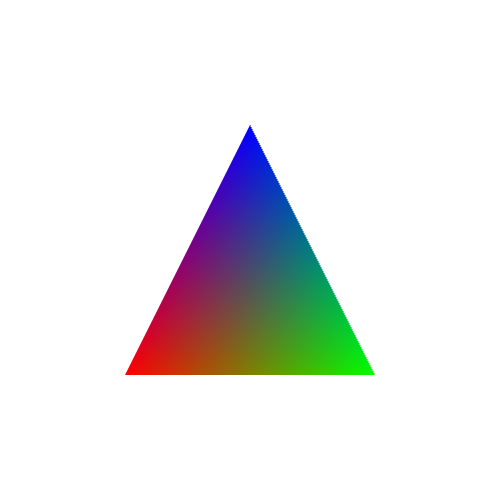
In an ideal OOP world we would do something making semantical sense, remotely looking like:
let v1 = new Vertex(x1, y1, 0xff0000 /* red */);
let v2 = new Vertex(x2, y2, 0x00ff00 /* green */);
let v3 = new Vertex(x3, y3, 0x0000ff /* blue */);
let triangle = new Triangle(v1,v2,v3);
webGlProgram.draw(triangle);
(Foot note: the code is gonna be pseudocode for a while, not actual runnable code. It’s for illustrative purposes only)
But… nope. Since vertices don’t exist, we need to leverage the only data structures available: VBO vertex attribute storages. And we need to decide whether we want one storage for both the (screen) coordinates and the colours, or one storage for each. So stuff can look like:
let combinedStorage = webGlCreateBufferSomething();
combinedStorage.store([x1,y1,0xff0000,x2,y2,0x00ff00,x3,y3,0x0000ff]);
webGlPointerStuff(glProgram, combinedStorage, "attribCoord", 0);
webGlPointerStuff(glProgram, combinedStorage, "attribColour", 2 * sizeof(Number)));
glProgram.drawTriangle(0,1,2);
Or, with one storage for each:
let coordStorage = webGlCreateBufferSomething();
coordStorage.store([x1,y1, x2,y2, x3,y3]);
let colourStorage = webGlCreateBufferSomething();
colourStorage.store([0xff0000,0x00ff00,0x0000ff]);
webGlPointerStuff(glProgram, coordStorage, "attribCoord", 0);
webGlPointerStuff(glProgram, colourStorage, "attribColour", 0);
glProgram.drawTriangle(0,1,2);
So then, the GL program will run for one single triangle composed of vertices 0, 1 and 2; and the attributes attribCoord and attribColour will have the expected values. The triangle is kinda there with the 0,1,2 sequence but, see, there are no vertices. A vertex stops being an entity by itself, and becomes a figment, a construct. A vertex is a set of attributes, and since attributes are zero-indexed, byte-aligned, and write-only, then a vertex is zero-indexed, and byte-aligned, and write-only. There is no way to give a vertex entity of its own: the Nth vertex is a set composed of the Nth item in each attribute storage bound to a GL program.
It’s a change in the frame of reference similar to going from a row-oriented database to a column-oriented database. As in, the entities you’re interested in are the rows, but you can only work with columns. We might be interested in vertices, but the abstraction is about the same attribute of several vertices.
OK, Iván, this may be enlightening and appropriate to a university CS course, but what does this have to do with maps on the web? What does this have to do with what happened in the FOSS4G live coding session?
On to a more complex example, then. Let’s talk about how small images are drawn. By “small images” I mean markers or billboards.
In web maps parlance, these are called “markers”. A “marker” is a specific kind of “point symbol”, one that displays as a 2D raster image. A GIS “point symbol” is attached to a specific 0-dimensional (i.e. point, as opposed to linestring/polygon) coordinate in the display CRS.
In OpenGL parlance, these are “billboards”. A “billboard” is a specific kind of “sprite”; it’s positioned on a plane which is always perpendicular to the eye/camera. A “sprite” is a specific kind of “quad”; one that displays (a section of) a 2D texture. A “quad”, short for quadrilateral (and which I always confuse with “quadrangle”), is a mesh made up of two triangles.
Fun, huh? Lots of different words and related concepts from two different points of view, all for the same thing:
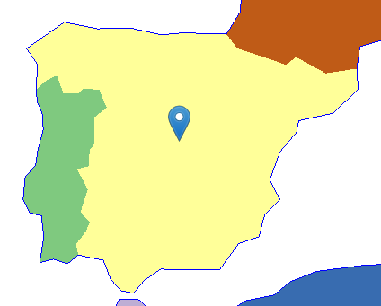
From a WebGL/OpenGL perspective, this boils down to a quadrangle quadrilateral, better viewed by filling in all those transparent pixels on the square image…
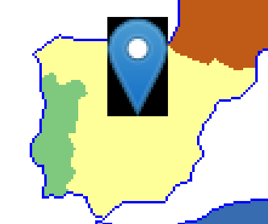
…and that quad is made up of two triangles, like so:
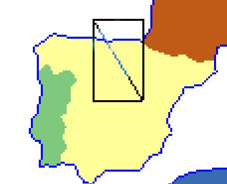
But since this is a GIS point symbol, it has to be bound to a single coordinate, and we want that to be the “tip” of the image. This is done by combining:
- The screen position of the CRS coordinate for the point geometry, which is the same for all four corners (usually this is performed via multypliying the vector containing the CRS coordinates by a matrix to perform an affine transformation)
- The offset, in screen pixels, that each corner must be extruded from the point geometry; this is different for each corner
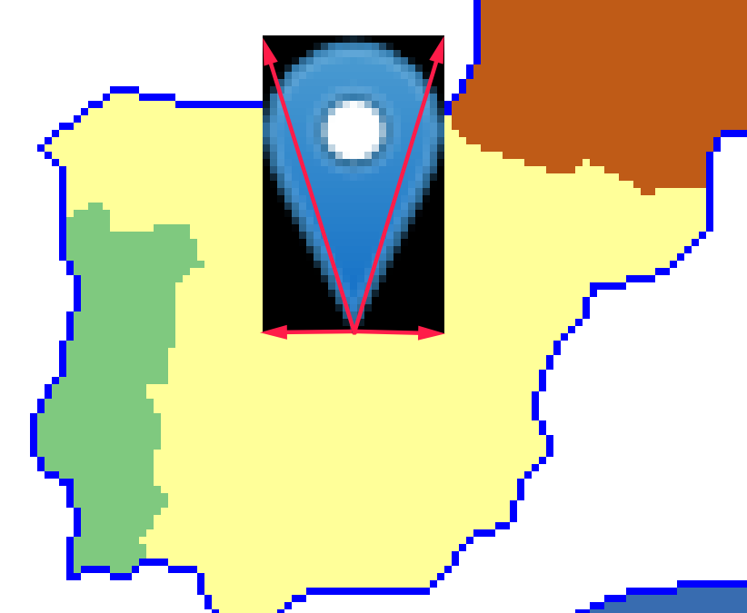
The top-left marker will be offset e.g. (-12,-41), top-right (+12,-41), bottom-left (-12,0), bottom-right (+12,0). It should be obvious that the specific amount varies with the image being used.
Due to the way WebGL/OpenGL deals with 2D raster textures, it’s most usual to use UV mapping - in simple terms, this is linking the top-left corner to the (0%,0%) position of the image, and the lower-right to (100%,100%):
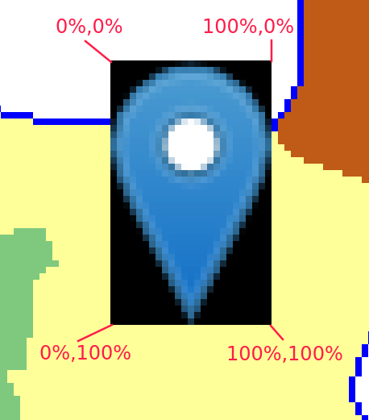
Usually these numbers are not 0% or 100% (in other words, 0.0 nor 1.0) because the texture atlas technique is commonly used. For an explainer, let’s assume no atlases.
So in order to draw this marker/point-symbol/quad/sprite/billboard, its vertices will need (at least) the following attributes:
- A 2-dimensional vector for the CRS coordinates (or CRS-like coordinates), same for all four corners
- A 2-dimensional vector for the extrusion amount, different for each corner
- A 2-dimensional vector for the UV map, different for each corner
So we want four vertices, like
let v1 = new Vertex(crsX, crsY, -12, -41, 0, 0);
let v2 = new Vertex(crsX, crsY, 12, -41, 1, 0);
let v3 = new Vertex(crsX, crsY, 12, 0, 1, 1);
let v4 = new Vertex(crsX, crsY, -12, 0, 0, 1);
glProgram.drawTriangles([[v1,v2,v3], [v2,v3,v4]]);
NO!! NONONO!!! WRONG!!! HAVEN’T YOU BEEN PAYING ATTENTION?! VERTICES DON’T EXIST!!
Instead, we need to decide how those three attributes are going to be put into different attribute storages. In the actual Glii-powered code that was running during the FOSS4G live coding session, I’m using two attribute storages: one for the CRS attributes, and one for offset+UVmap.
So instead, the pseudocode must look like:
let crsCoords = attribStorage(/* something */);
let offsetAndUV = attribStorage(/* something */);
crsCoords.store(0, crsX, crsY);
crsCoords.store(1, crsX, crsY);
crsCoords.store(2, crsX, crsY);
crsCoords.store(3, crsX, crsY);
offsetAndUV.store(0, -12, 41, 0, 0);
offsetAndUV.store(1, 12, 41, 1, 0);
offsetAndUV.store(2, 12, 0, 1, 1);
offsetAndUV.store(3, -12, 0, 0, 1);
If you’re a seasoned programmer and you’re used to code deduplication (and code deduplication is good), you might be wondering if it’s neccesary to write the CRS coordinates four times. The answer is «yes». You might be wondering if it’s not possible for vertices to share the same CRS coordinates. The answer is «no». You might be wondering if vertex attributes could have pointer indirection. The answer is «no». The GPU+OpenGL stack needs data to be fully dereferenced even if that means duplicating data. This is the way OpenGL algorithm architecture works, and if you dare question it, some OpenGL/KRONOS/SIGGRAPH fanboys will pay you a visit to remind you that criticizing the OpenGL architecture is wrong.
Another way to write that pseudocode is to set several items in an attribute storage at once (because of performance issues I’ll briefly touch later):
let crsCoords = attribStorage(/* something */);
let offsetAndUV = attribStorage(/* something */);
crsCoords.store([
crsX,crsY,
crsX,crsY,
crsX,crsY,
crsX,crsY
]);
offsetAndUV.store([
-12, 41, 0, 0,
12, 41, 1, 0,
12, 0, 1, 1,
-12, 0, 0, 1
]);
Because vertices. Do. Not. Exist.
The actual snippets of Glii-powered code used in the live coding session look like:
// Attribute storage for CRS coordinates
this._coords = new glii.SingleAttribute({
size: 1,
growFactor: 1.2,
usage: glii.DYNAMIC_DRAW,
glslType: "vec2",
type: Float32Array,
});
// Attribute storage for extrusion and UV map
this._attrs = new glii.InterleavedAttributes(
{
usage: glii.STATIC_DRAW,
size: 1,
growFactor: 1.2,
},
[
{
glslType: "vec2",
type: Int16Array,
normalized: false,
},
{
glslType: "vec2",
type: Float32Array,
normalized: false,
},
]
);
/// Waaaay later, when the the GL program is defined...
this._program = new glii.WebGL1Program({
// ...it binds attributes to attribute storages...
attributes: {
aCRS: this._coords,
aExtrude: this._attrs.getBindableAttribute(0),
aUV: this._attrs.getBindableAttribute(1),
},
// ...so that the vertex shader can use "aCRS", "aExtrude" and "aUV"
vertexShaderSource: `
void main() {
vUV = aUV;
gl_Position = vec4(
vec3(aCoords, 1.0) * uTransformMatrix +
vec3(aExtrude * uPixelSize, 0.0)
, 1.0);
}`,
/* and other stuff for defininf the GL program, which I'm ommitting*/
});
This architecture comes from some of my previous mistakes: The CRS might change, so reprojecting is an issue. Since reprojection affects all vertices, but it only affects one of their attributes, it makes sense to have a separate storage for it. That way, a reprojection replaces the values in the CRS storage but doesn’t need to touch the other attributes.
Or, I could create a new storage for the projected CRS, and replace the storage being used by the program. i.e. bind a new storage object to the program’s attribute.
Another issue is that writing to GPU memory is slower than writing to RAM, so batch processing of data is useful. In other words: if several markers/sprites are to be added to a map/scene, it makes sense to modify the attribute storages as few times as possible, sending as much data as possible each time.
So my Glii-powered code has the concept of GPU-detached sprites, which are a subclass of cartographic symbol. When several of them are added, I set the data on the attribute storage, at once (note the usage of Array.prototype.flat()):
this._attrs.multiSet(
baseVtx, // ← This comes from a block allocation algorithm
sprites
.map((s) => {
// Extrusion offset. Based on anchor+size, Leaflet-style.
const x1 = -s._anchor[0];
const y1 = s._anchor[1];
const x2 = x1 + s._size[0];
const y2 = y1 - s._size[1];
// UV-map coordinates from the texture atlas.
// This uses a shelf-pack "bin" and the texture size
const tx1 = s.bin.x / txs;
const ty1 = s.bin.y / txs;
const tx2 = (s.bin.x + s.bin.w) / txs;
const ty2 = (s.bin.y + s.bin.h) / txs;
return [
[[x1,y1],[tx1,ty1]],
[[x1,y2],[tx1,ty2]],
[[x2,y2],[tx2,ty2]],
[[x2,y1],[tx2,ty1]],
];
})
.flat()
);
…and since the CRS coordinates are handled by a different code path and might be called more than once in the sprite’s lifetime, this reprojection + flattening + setting happens apart:
const coordData = relevantSymbols
.map((symbol) => symbol.geom.toCRS(this._crs).coords)
.map((c) => [c, c, c, c])
.flat(2);
this._coords.multiSet(start, coordData);
What about the triangles? There’s a separate data structure holding the indices of the vertices (because, remember, vertices don’t exist) making up the two triangles of each quad. Again, these are set all at once for a batch of sprites:
this._indices.set(
baseIdx, // ← Similar to baseVtx, this comes from a block allocation algorithm
sprites
.map((s) => {
const base = s.attrBase;
return [
base, base+1, base+2,
base, base+2, base+3
];
})
.flat()
);
All of this comes together when the upper functionality creates some Sprites and adds them to a map/scene:
const spriteopts = {
image: ImageFrom('leaflet-marker-icon.png'),
imageSize: [25, 41],
imageAnchor: [12, 41],
};
let spriteMAD = new Sprite(
new Geometry(epsg4326, [-3.6852975, 40.40197212]),
spriteopts
);
let spriteTRD = new Sprite(
new Geometry(epsg4326, [10.4166662, 63.41665753]),
spriteopts
);
let spriteBAS = new Sprite(
new Geometry(epsg4326, [-58.399477, -34.60055574]),
spriteopts
);
map.multiAdd([ spriteMAD, spriteTRD, spriteBAS ]);
So the OOP code can have geometry objects, and then symbol objects, and those are detached from the GPU. When added to a map/scene, their images are texture-atlas-ed, room for their vertex attributes (in the attribute storages) and triangles (in the mystical not-explained-in-this-writing element index storage) is allocated, their properties are serialized together and put into attribute storages in an acrobatic I-have-rows-but-need-to-work-with-columns maneouver. The final upper code looks sane and OOP-y, and everything works.
Is this making any sense to you? I’m gonna guess “not much”. But believe me, this is the simplest, most-understandable way I could find to implement such a thing.
During the FOSS4G live coding session I took like 5 minutes to try and condense the information about markers/sprites in the above explainer.
Now on to the remaining 55 minutes.
My main goal for the FOSS4G live coding session was raw, pure entertainment value - coding something not done before, not rehearsed, untested. I wanted my live coding session to be live.
8.a : of or involving a presentation (such as a play or concert) in which both the performers and an audience are physically present
8.b : broadcast directly at the time of production
So the weeks before the FOSS4G I asked myself: “What can I feasibly implement in regards to WebGL maps, in less than one hour, under pressure, with an audience watching?”. My own answer was “pie charts”.
Pie charts are used as cartographic symbols - I could make this screenshot of a quick-and-dirty QGIS project in a few minutes:
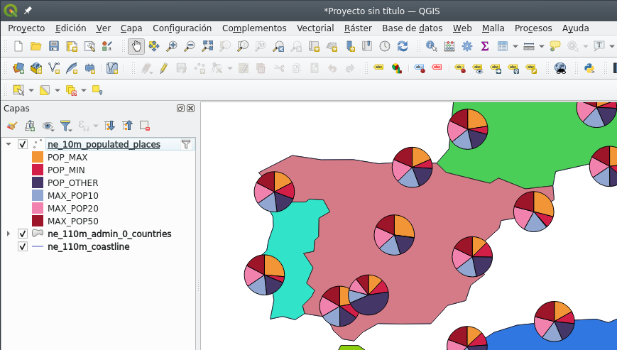
(I won’t discuss the usefulness, semiotics, aesthetics of pie charts on maps - just the technical aspects of getting them to be drawn using WebGL.)
From a purely technical point of view, pie charts are eeriely similar to sprites - it’s just triangles in which all the vertices share the same CRS coordinate, and are extruded different amounts.
The most basic approach is to turn each slice of the pie chart into a triangle: one vertex at the center, one vertex at the start of a slice, and one vertex at the end of a slice, like so:
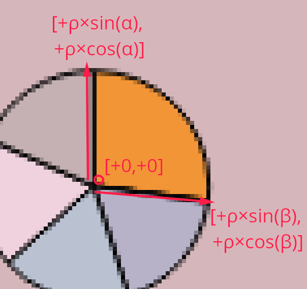
That’s [+0,+0] for the centre vertex, [+ρ×sin(α), +ρ×cos(α)] and [+ρ×sin(β), +ρ×cos(β)] for the start and end of the slice, where α and β are the start and end angles of that slice, and ρ is the radius. Or, in ASCII-7 terms, [+ rho * sin(alpha), + rho * cos(alpha) ], then idem for beta.
Sounds easy(-ish) and feasible, right? Instead of extruding vertices by an amount given by the size of an image, the extrusion is based on basic trigonometry and super-basic statistics on the data to get the relative angles (or angular widths).
I had that in my mind before the live coding session. When the time came, I copy-pasted the code for my Sprite class into a Pie class, ripped apart the pieces I didn’t need, and started coding the pieces I did need.
One of the first things I did was write the code for the top-level functionality. It needed understandable just by looking at it, in the spirit of literate programming. It ended up like this:
let pieMAD = new Pie(
new Geometry(epsg4326, [-3.6852975, 40.40197212]),
{
radius: 40,
slices: {
red: 2,
green: 15,
blue: 8,
pink: 11,
cyan: 12,
black: 13
}
}
);
map.multiAdd([ pieMAD ]);
Easy enough to understand - a pie symbol has its point geometry, a radius, and a list of colours and the amounts they represent.
The code for the Pie class sums up all the values with a bit of fancy functional programming:
this.valueSum = Object.values(this.slices).reduce(
(acc,curr)=> acc + curr, 0
);
But pies are different than sprites in that they have a variable number of vertices (in this first approach, three per slice) and triangles (one per slice, three indices per triangle):
this.attrLength = 3 * sliceCount;
this.idxLength = 3 * sliceCount;
If you’ve been following me all along (which, let’s be clear, it’s hard since anything WebGL-related is thick stuff), you know that (a) I think in OOP terms (b) there’s a Pie class (c) WebGL data structures should be packed together, and therefore (d) there must be some class or code that puts the data from Pies together and writes all the WebGL data structures.
I call that thing an acetate, in honour of the material (and Spanish nomenclature) for the old-timey projector slides. I’m old enough to have CS university professors use these:

(Image under CC-by-sa license shamelessly copied from the wikipedia article)
{kind=link}
So in my current implementation, symbols don’t get added to the map; instead, symbols are added to an acetate; the acetate rasterizes the symbols; then all acetates are composed together, on top of each other, to make up the map.
For each symbol, there is a corresponding acetate - the acetate handles the WebGL program and data structures (attribute storages and primitive index storage). For the Sprite class there’s the AcetateSprite class. For the Pie class, I copy-pasted the AcetateSprite class into the AcetatePie class and got to work.
I’m slightly ashamed of not being entirely happy with whis class architecture. Unfortunately, a symbol and its acetate need to be tightly coupled. And tight coupling is generally undesireable. Alas, I consider this a lesser evil - in return I gain totally loose coupling between WebGL data structures and symbols. A symbol (e.g. a Pie) can be instantiated without having to deal with GPU memory or WebGL contexts, and so the corresponding acetate (e.g. a AcetatePie) is the sole responsible for the WebGL mess: packing data, filling up the attribute storages, triggering the draws.
So, an AcetatePie will receive an array of Pies sooner or later, and must allocate room for the data for the needed vertices.
const totalVtx = pies.map(pies=>pies.attrLength).reduce(
(acc, val) => acc+= val, 0
);
const totalIdx = pies.map(pies=>pies.idxLength).reduce(
(acc, val) => acc+= val, 0
);
let baseVtx = this._attribAllocator.allocateBlock(totalVtx);
let baseIdx = this._indices.allocateSlots(totalIdx);
Next: one triangle per slice, respecting the base indices of each Pie. The Glii IndexBuffer/TriangleIndices in this._indices will keep track of that. One triangle per slice makes things look simple in this fancy bit of functional programming:
this._indices.set(
baseIdx,
pies
.map((p) => {
let base = p.attrBase;
return Object.keys(p.slices).map(s=> {
const out = [base, base+1, base+2];
base += 3;
return out;
});
})
.flat(2)
);
The AcetatePie is also responsible for the WebGL shader program. It doesn’t need a UV map anymore, and it doesn’t need a texture atlas anymore, but now it needs a aColour attribute for each vertex:
glProgramDefinition() {
const opts = super.glProgramDefinition();
return {
...opts,
attributes: {
aExtrude: this._attrs.getBindableAttribute(0),
aColour: this._attrs.getBindableAttribute(1),
aCRS: this._coords
},
/* snip */
vertexShaderSource: `
void main() {
vColour = aColour;
gl_Position = vec4(
vec3(aCoords, 1.0) * uTransformMatrix +
vec3(aExtrude * uPixelSize, 0.0)
, 1.0);
}`,
/* snip*/
};
}
And so, the attribute storage for extrusion and UV map needs to change, so it holds extrusion and colour instead. Colour is a 4-element vector (red, green, blue, alpha) and we don’t need nothing more than 8 bits per element:
this._attrs = new glii.InterleavedAttributes(
{
usage: glii.STATIC_DRAW, // Assume that this data doesn't get overwritten often
size: 1, // Initial size of this attribute storage
growFactor: 1.2, // Any time the size needs to grow, grow by this factor
},
[
{
// Extrusion length
glslType: "vec2", // XY
type: Int16Array, // From approx. -32000 to +32000
normalized: false,
}, {
// Colour
glslType: "vec4", // RGBA
type: Uint8Array, // Input data between 0 and 255
normalized: true, // In the shader, 0 gets normalized to 0% (or 0.0)
// and 255 gets normalized to 100% (or 1.0)
},
]
);
…and now for the trickiest part. The AcetatePie needs to pack the attribute data for extrusions and colours into the attribute storage, and needs to do it in one pass for performance reasons. Behold:
this._attrs.multiSet(
baseVtx,
pies.map(pie=> {
let theta = 0;
const r = pie.radius;
let sliceData = Object.entries(pie.slices).map(
([colour, amount]) => {
// let omega = theta + Math.PI / 3;
let omega = theta + 2 * Math.PI * (amount / pie.valueSum);
console.log(theta, omega);
const colourArr = parseColour(colour);
let packed = [
[[0, 0], colourArr], // vertex 0
[[Math.sin(theta) * r, Math.cos(theta) * r], colourArr], // vertex 1
[[Math.sin(omega) * r, Math.cos(omega) * r], colourArr], // vertex 2
];
theta = omega;
return packed;
});
console.log(sliceData.flat());
return sliceData.flat();
})
.flat()
);
Coding this live was hectic. I was midly panicking during the whole ordeal. And (as I’ve written many times before) since WebGL is a black box, debugging is complicated. Combine that with missing semicolons, nested parenthesis, mistaking Object.entries with Object.values, handling arrays of arrays of arrays of arrays with .map() and .reduce() and .flat(), and you’ve got quite the show. In fact, a few hundred people had quite the live show. After 30 minutes or so of coding, 40 minutes into the session, tension was high on the session chat:
(Above screenshot from a tweet by Cristina AKA “maptheclouds”)
I remember panicking about nomenclature. I intended to use alpha and beta for the angles of each slice, but then I realized that alpha is used in the colours. Hence theta and omega. And then I realized that parseColour() from the css-color-parse library already returns a 4-element array, and I wasn’t reusing the name alpha anyway.
Nested .flat()s. Recursing to the good old console.log(). I was panicking, people were panicking. After 10 or so more minutes of frantic coding, debugging, cursing myself, and trying to make the whole black box of WebGL code work, something magical happened:
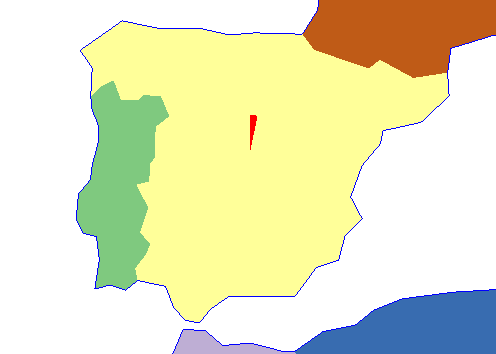
It was a single triangle, with one of its vertices on the center, and its width relative to the slice. As expected. Something was working.
I shouted «WE’VE GOT A TRIANGLE!!! WOOOHOOOOO!!!», and everybody cheered, and my panic went away because something was working.
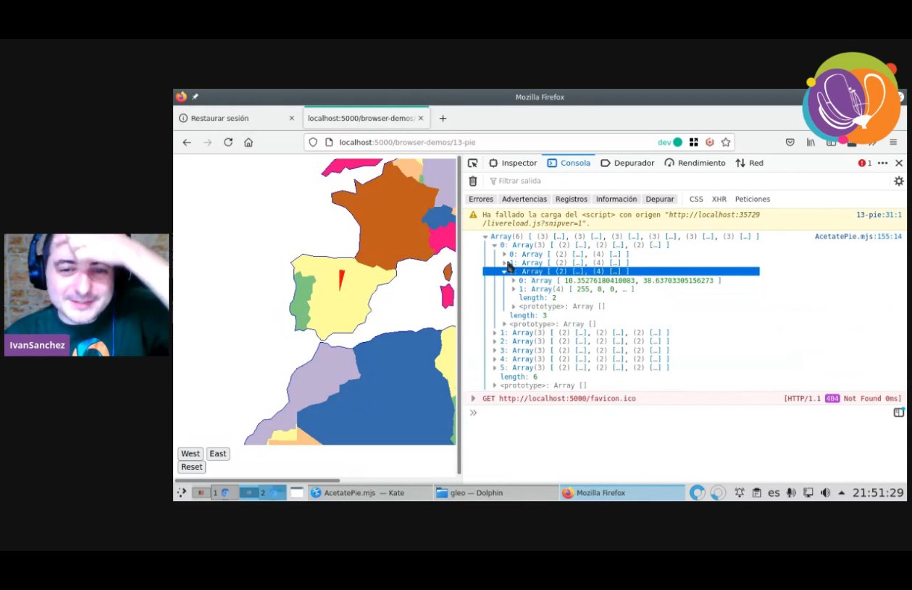
(Above screenshot from a tweet by Cristina AKA “maptheclouds”, just five seconds after a similar tweet by Nicolas Roelandt)
And the chat was exploding with memes about explosions.
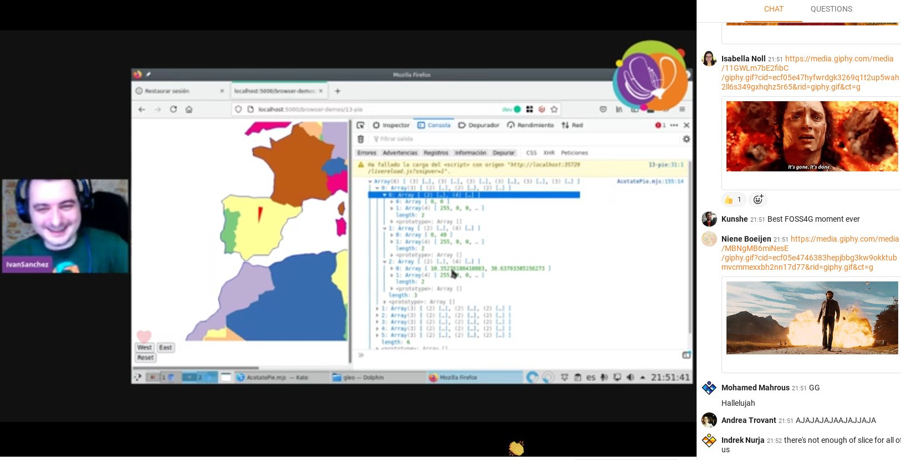
(Above screenshot from a tweet by María AKA “délawen”)
As a brief interlude, I want to remind: I wish that vertices were a thing, I think they existed as OOP entities. If vertices were a thing, translating a pie symbol into slices into triangles into vertices would be a much straightforward operation.
But, since vertices don’t exist, the only way to make things work is by packing attribute data together, and that proves finicky. It’s not difficult per se: the concept of “a triangle with a center and extrusion based on sine and cosine of two angles” is not hard to understand. The problem is dealing with four levels of nested arrays and pack them in low-level data structures without messing anything up. An acetate has several pies; a pie has several slices; a slice has several vertices; a vertex has several attributes; an attribute is a 1- or 2- or 3- or 4-element tuple.
At that point, I was 52 minutes into my 60-minute session, I had been talking non-stop all that time, and the session was a success:
- It didn’t matter that I didn’t accomplish the entire goal
- I planned for a one-hour task, and managed to achieve a partial result around the 50 minute mark
- It didn’t matter that attendees didn’t understand the whole code
- Attendees were having tons of fun
- Attendees had a very clear idea that WebGL programming is
- a hard-to-debug black box
- with hardly any feedback to the developer
- I proved to myself that, indeed, my WebGL map framework can be extended without insane amounts of work
What WebGL map framework, you might ask. If you’ve read this far, know that it’s called Gleo, it’s still on its infancy, documentation is scarce, and it’s hard-GPL-licensed. Yes, hard GPL on a javascript library. No more MIT stuff after the mapbox-gl-2/maplibre-gl fork. On the plus side, this code is 100% .esm javascript modules, which means no build toolchain whatsoever. Feels good. It’ll be done when it’s done.
I fumbled a bit more with the code - showing that the red triangle is, indeed, a result of specifying the colour "red" and the width depended on the data for the Pie symbol. Unfortunately there wasn’t enough time to debug why there was only one slice. But everybody had fun and got the point that WebGL is a hard black box. I was happy.
Still, why was that failing? I didn’t want to leave all the audience hanging on an unknown. After I caught my breath, I set to investigate.
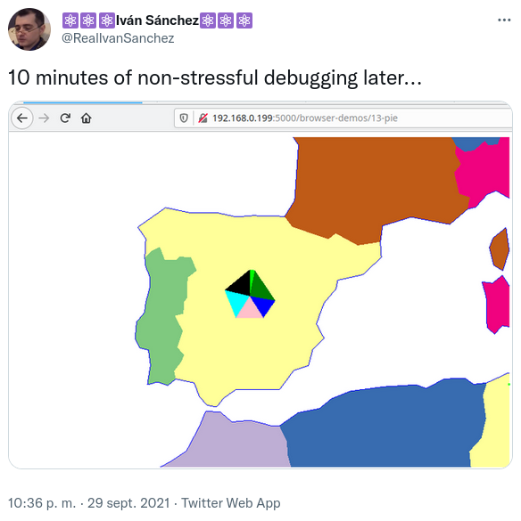
So, what happened?
I was an idiot, that’s what happened.
The Pie symbol, same as the Sprite symbol, uses two different attribute storages in its acetate: One for the common CRS coordinates (defined in a parent Acetate abstract class, in pure OOP fashion), and one for the symbol-specific attributes.
The AcetatePie code I was frantically hacking together during the session correctly packed the Pie-specific attributes into its attribute storage. And the CRS attributes were still using the copy-pasted code from AcetateSprite:
const coordData = relevantSymbols
.map((symbol) => symbol.geom.toCRS(this._crs).coords)
.map((c) => [c, c, c, c])
.flat(2);
…for each symbol in the acetate (or rather, for each symbol in a contiguously allocated region of attribute storages), gets its point geometry. (Re-)project it into the current CRS. And before flattening the data to store it into an attribute buffer, turn one pair of coordinates into four pair of coordinates, since all four vertices for the Sprite need to have the same CRS coordinates because data needs to be dereferenced/duplicated.
Four pairs of coordinates for the four vertices in the Sprite.
Four vertices.
Idiot.
A Pie has more than four vertices.
And, this should be apparent now, WebGL allows a developer to have attribute storages of different sizes linked/bound to a GL shader program, and will not tell the developer in an error message which of those data structures is the culprit. Damn undebuggeable black box.
There was one triangle because there was valid data for only four vertices.
A quick change later, stuff was working as expected.
const coordData = relevantSymbols
.map((symbol) => (new Array(symbol.attrLength)).fill(symbol.geom.toCRS(this._crs).coords))
.flat(2);
Instead of quadruplicating the CRS data, create an array with as many vertices the pie needs, then fill each slot in that array with the same projected point. It was obvious.
Even with these problems, I intent to keep doing bits of work in my WebGL mapping stuff. Even though it’s nowhere near the quality of feature completeness of any other web mapping framework out there, the fact that it’s possible to hack on it in less than one hour and under peer pressure is powerful.